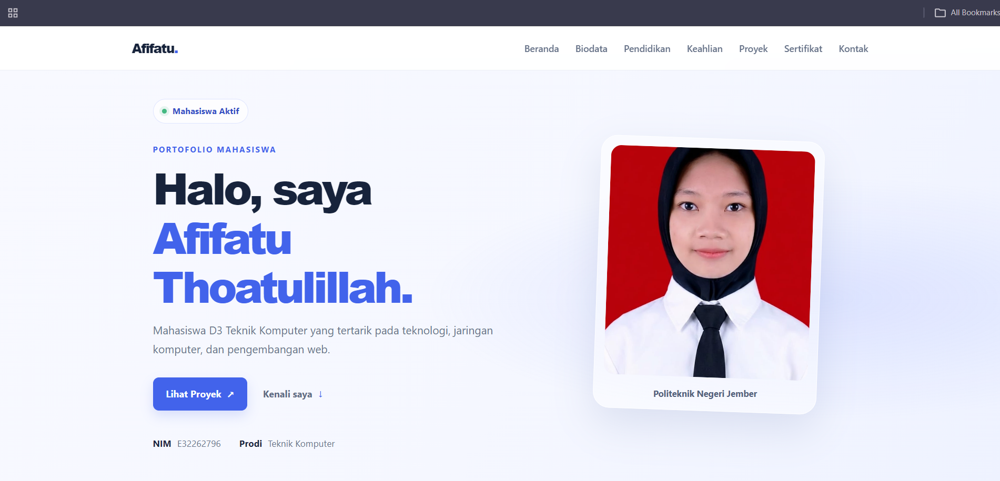
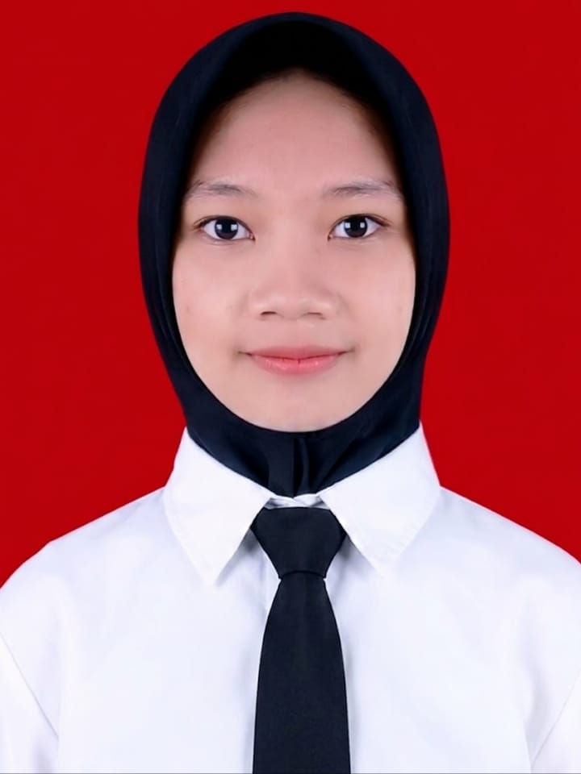
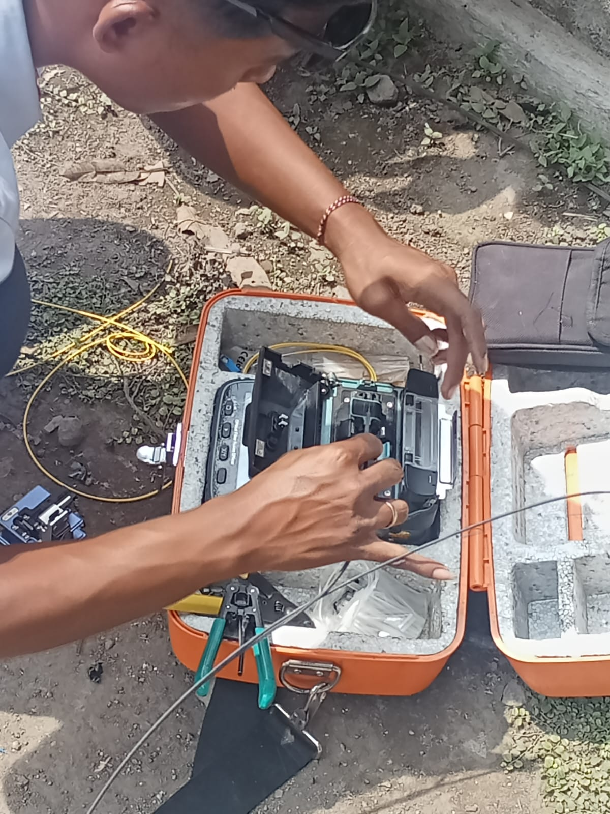

01PENGEMBANGAN WEB
Website Portofolio
Halaman portofolio untuk memperkenalkan profil, keahlian, dan karya.
HTMLCSS
PORTOFOLIO MAHASISWA
Mahasiswa D3 Teknik Komputer yang tertarik pada teknologi, jaringan komputer, dan pengembangan web.

TENTANG SAYA
Informasi singkat tentang latar belakang saya.
PERJALANAN AKADEMIK
Tahapan pendidikan yang telah dan sedang saya tempuh.
Jurusan Teknologi Informasi — Program Studi Teknik Komputer
Jurusan TKJ
Pendidikan Menengah Pertama
YANG SAYA KUASAI
Kemampuan teknis dan interpersonal yang terus saya kembangkan.
KARYA PILIHAN
Beberapa karya dan dokumentasi yang menggambarkan perjalanan belajar saya.

01PENGEMBANGAN WEB
Halaman portofolio untuk memperkenalkan profil, keahlian, dan karya.

02TEKNOLOGI INFORMASI
Dokumentasi kegiatan dan hasil pengerjaan proyek selama proses belajar.
PENCAPAIAN
Sertifikat pelatihan dan pencapaian yang telah saya kumpulkan.
MARI TERHUBUNG
Hubungi saya melalui email atau media sosial.